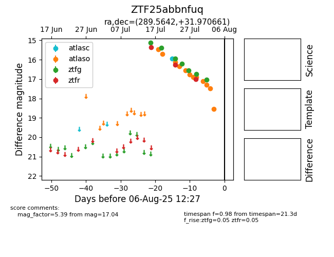

Target ZTF25abbnfuq at 2025-08-06 17:07, see:
FINK: fink-portal.org/ZTF25abbnfuq
Lasair: lasair-ztf.lsst.ac.uk/objects/ZTF25abbnfuq
ALeRCE: alerce.online/object/ZTF25abbnfuq
alt names
ZTF25abbnfuq (ztf,fink)
coordinates:
equatorial (ra, dec) = (289.5642,+31.97066)
galactic (l, b) = (64.4370,+8.81756)
photometry
last atlasc=15.96, atlaso=18.53, ztfg=17.04, ztfr=17.00
1 atlasc, 12 atlaso, 7 ztfg, 3 ztfr detections
